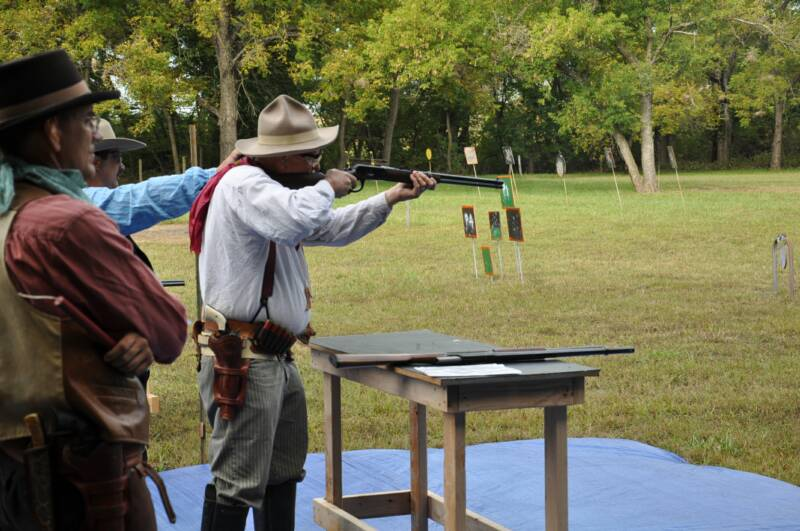
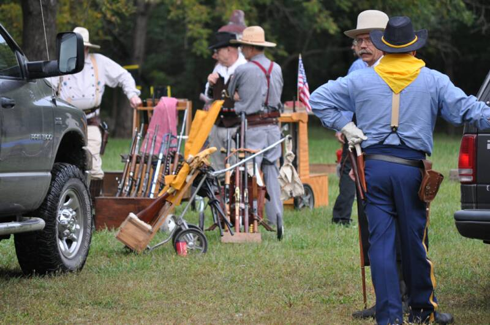
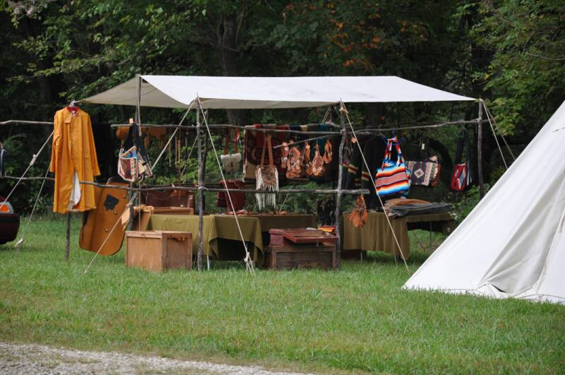
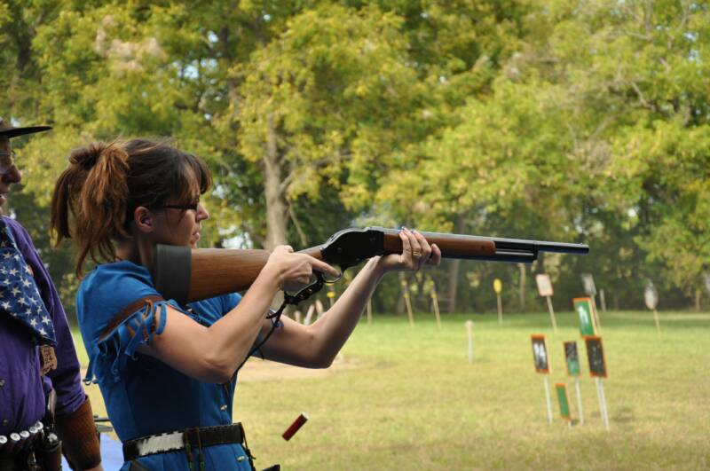
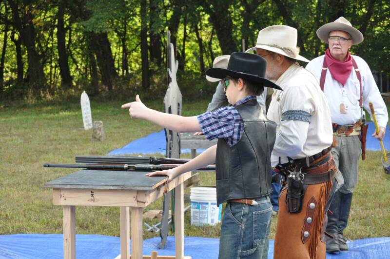
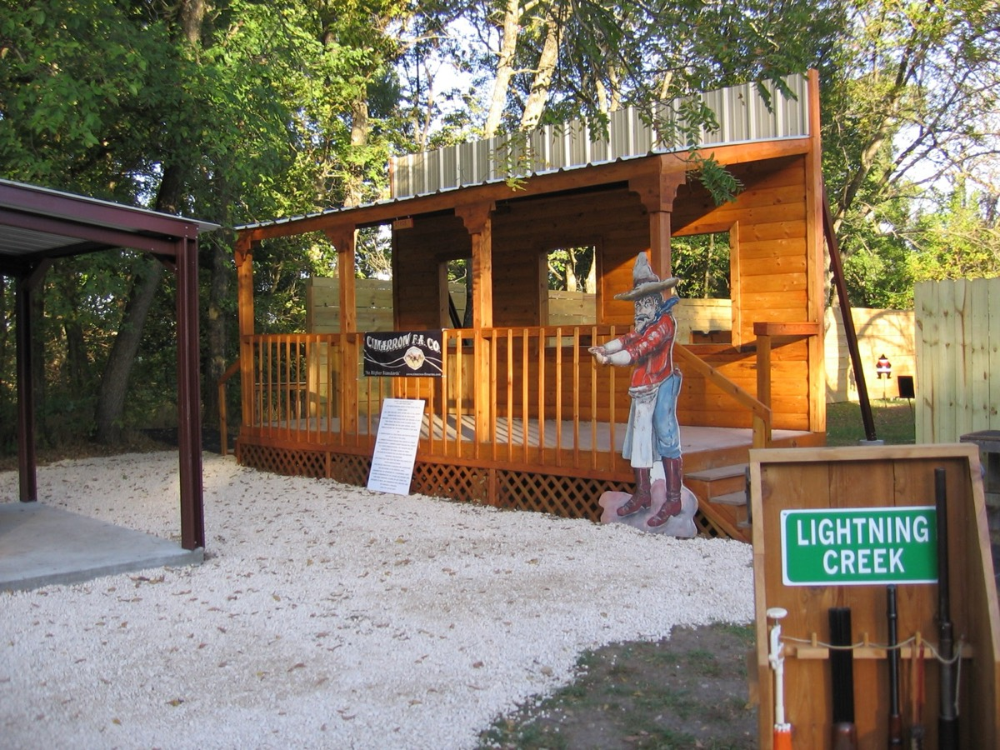
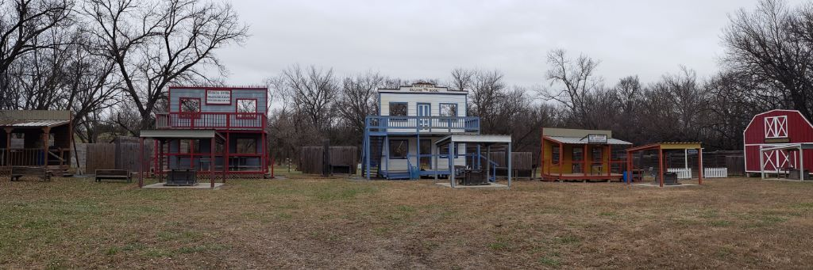
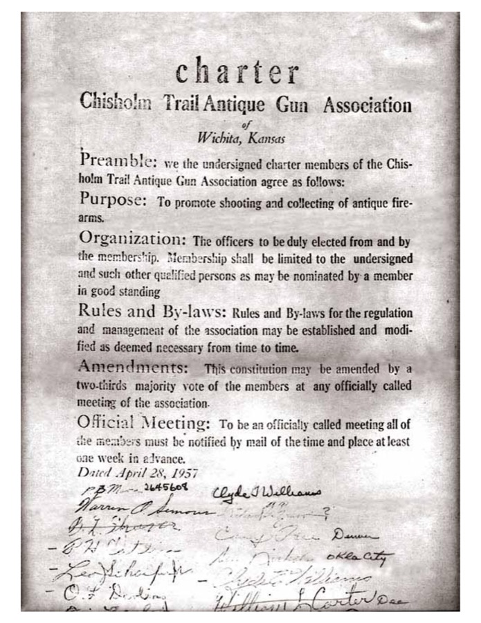

March
20–21
2027
Spring Wichita Gun Show
Heartland Credit Union Arena, Park City. Sat 9–5, Sun 9–3.
Collectors & shooters of antique arms · Since 1957
A Kansas tradition since 1957. Join a community of antique-arms collectors, cowboy action shooters, and friends keeping history alive — one match at a time.

The Wichita Gun Show
For 2027 ticket availability, check with the club before making plans.
Add the spring show to your calendar ↓8-foot tables are $75 each. Reserve your space for the spring show by email or phone.
Every ticket and table helps fund the range, our matches, and our youth and women's programs.
On the calendar
Most matches are for members, but several big events each year are open to everyone — no membership required.
Showing all 6 events
Heartland Credit Union Arena, Park City. Sat 9–5, Sun 9–3.
Muzzleloading contests, primitive camping and trading in the style of an 1830s fur-trade rendezvous. Families welcome.
Two-day cowboy action match: 10 main stages, side matches, long-range events and cash awards. Free camping on site.
2026 match: Sept 19–20
A beginner's day for women 16 and up — pistol, rifle, shotgun, muzzleloader, .22 and archery. All gear and lunch provided.
2026 clinic: Sept 26
Heartland Credit Union Arena, Park City.
A Kansas muzzleloading tradition since 1976 — the first Kansas State Rendezvous was held on our range.
2025 rendezvous: Nov 1–2
TBA = dates to be announced. Contact the club to confirm dates and registration before traveling.
Every month for members Club meeting · Cowboy action matches · Muzzleloading match · .22 match & Steel Challenge · Range work days
What we shoot

Single-action revolvers, lever rifles and period shotguns, shot in costume on the stages of our western town.

Flintlock and percussion matches, plus two rendezvous a year with period camps, trading and contests.

Our yearly NRA clinic gives women a safe, beginner-friendly first day on the range with experienced instructors.

Young hunter training and the summer Young Hunter Education Challenge weekend for South-Central Kansas youth.

The range
Members bought the land in 1975 and have been building on it ever since — formal ranges for rifle, pistol and shotgun, a trap range, and a full western-facade town for cowboy action stages.

Membership
CTAGA is a private, member-run club. New members come in through a member who sponsors them. Don't know a member yet? Send us a note and we'll point you in the right direction.
Attend a monthly club meeting as a member's guest.
Fill out the application with your sponsor and take a tour of the range.
Shoot the matches, help at the gun show and range clean-ups, and get to know the members.
After one year, the membership votes to welcome you in.
Our history

“To promote shooting and collecting of antique firearms.”CTAGA Charter · April 28, 1957
The charterFounding members from Wichita, Denver and Oklahoma City sign the club's charter.
The first gun showThe Wichita Gun Show begins — and grows into the largest show in Kansas.
Our own rangeMembers buy eight acres between Kechi and Benton and build the range house.
The rendezvousThe first Kansas State Rendezvous is held on the new range.
Steventon AwardThe Jack Steventon Memorial Award begins honoring a member each year for years of volunteer service.
Cowboy actionCowboy action shooting arrives, and members raise a western-facade town on the range.
Still shootingTwo gun shows, two rendezvous, monthly matches, and programs for youth and women.
The gun shows and public events listed above welcome nonmembers. The range is private and has locked gates. Contact the club to arrange a visit or learn about membership.
No. The Wichita Gun Show is at Heartland Credit Union Arena in Park City. The club range is in Benton. Use the show directions for your gun show visit.
Email the club secretary to introduce yourself. The club can explain the sponsor process and help you take the first step.
Use the club’s official dues payment page. For newsletter or membership questions, contact the secretary at ctagasec@gmail.com.